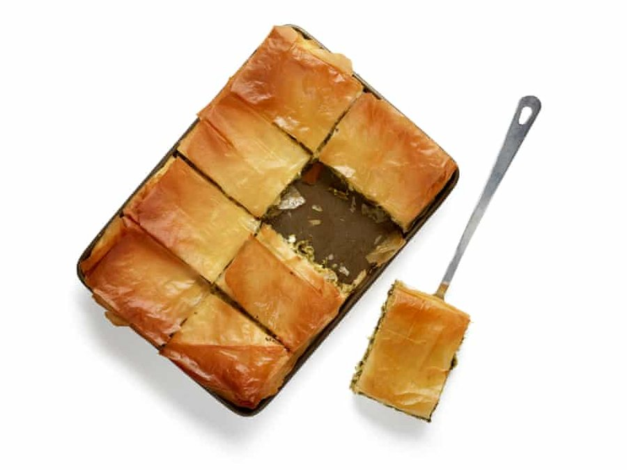

Spanakopita

A pie for midsummer, when greens and cheese in crackly filo have the edge on steak and kidney wrapped in suet. Spanakopita is a Greek classic: equally good warm from the oven or cold the next day, vegetarian-friendly (so long as you use a feta made without animal rennet) and utterly delicious, it’s perfect picnic fare, even if you’re not going any farther than your own garden.
Prepare the greens — To prepare the fresh spinach, trim the bottom off the stalks, then roughly chop the leaves and finely chop the stems. Put in a colander with a generous sprinkle of salt, stand in a sink and massage the leaves with your hands until they wilt into a tractable mess (if you’re using frozen, defrosted stuff, just roughly chop it), then leave to drain.
Soften the alliums — Meanwhile, peel and finely chop the red onion (or trim and finely chop the leek) and slice the spring onions. Heat the oil in a wide frying pan over a medium-low heat, and fry the onion (or leek) until softened but not browned. Take off the heat, immediately stir in the spring onions, then tip into a large bowl.
Add the cheese, mint and bulgur — Crumble the feta into the bowl. Roughly chop the herbs, discarding the woody stems from the mint, then add to the bowl with the bulgur wheat, if using; it’s not a common ingredient in spanakopita, but it does help soak up the liquid from the spinach, and it gives the pie a more interesting texture. Rice will do much the same job.
Squeeze dry the greens and add to the mix — Wring out the spinach with your hands until no more water comes out (it should look thoroughly wilted by this point), then stir into the cheese bowl. Crack in the eggs and add the lemon zest, a glug of olive oil and a good grating of nutmeg, and mix again (again, hands are the best tool for this). Season lightly: feta is quite salty as it is.
Line the tin with filo — Heat the oven to 200C (180C fan)/390F/gas 6. Brush a 30cm x 25cm baking tin with olive oil, then line with half the filo, brushing each sheet with oil as you go (a spray is useful here, if you have one); take care not to press the sheets down too hard, otherwise they’ll compact. Leave any excess pastry hanging over the sides.
Add the filling, then cover with more filo — Spoon in the filling, level out the top, then repeat the layering process with the remaining pastry to make a lid. Fold the overhang inwards to create an edible rim, drizzle with more oil and cut into the desired portion sizes. Bake for about 30-40 minutes, until golden. Leave to cool slightly, or completely, before serving.